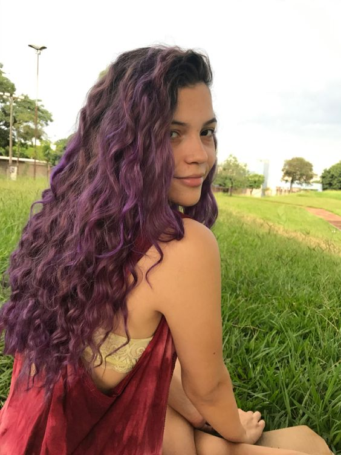

CURRICULUM VITAE
Patrícia Martins
Engenheira de Software

CURRICULUM VITAE
Engenheira de Software
Me formei em Técnico em Informática para Internet em 2022 pelo Instituto Federal de Ciência e Tecnologia do Mato Grosso do Sul, em 2023 segui para a graduação em Sistemas de Informação na USP, 4 anos depois fiz pós graduação em Engenharia de Software na Universidade de Yale.
Data de nascimento: 05/11/2004
CPF: 123.456.789-10
Orientadora
05/11/2028 - 04/03/2030
Em meu primeiro emprego na área eu orientava estágiários e coordenadava o setor de estudantes da Microsoft Brasil.
Editora Geral
01/04/2030 - 09/05/2032
No instituto Patati Patatá eu revisava o desenvolvimento e alterações do site de doações. Em cinco meses de trabalho o site recebeu reconhecimento mundial após ganhar o prêmio de melhor site de ideia original dos 59 países envolvidos.
Analista de Sistemas
15/05/2032 - atualmente
Após a reforma do site do Banco do Brasil organizado e planejado por mim e a equipe que eu coordenava, ganhamos um prêmio Lobel (equivalente ao prêmio Nobel na área de computação) após desenvolvermos um aplicativo 100% seguro e confidencial para o usuário.